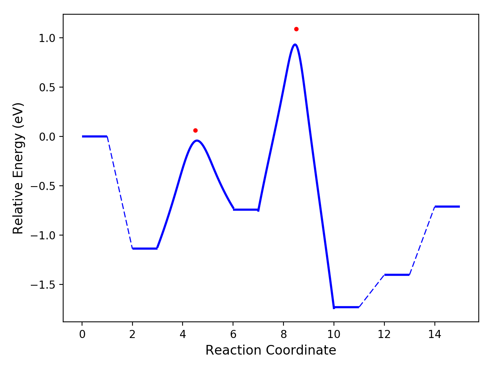

DFT tutorial - Grabow's group
Table of Contents
- 1. Introduction
- 2. Linux, Python and ASE
- 3. Computing Concepts
- 4. Setting up and Submitting a VASP Calculation
- 5. Visualization
- 6. Todo
1 Introduction
This is supposed to be a tutorial to help new members of the group to start performing DFT calculations, starting from basic commands in a Linux terminal to adsorption calculations using VASP. This is not supposed to be a thorough guide, and the user is encourage to complement the information provided here with other sources.
We also recommend you to look at John Kitchin's DFT Book (pdf) or html versions since it contains many working examples that can be easily (or relatively easy) followed. Some of the examples shown here were taken from there and slightly modified to fit the purpose of this tutorial.
2 Linux, Python and ASE
2.1 Basics of Linux
Whenever you see rectangles like the one below in this tutorial, it will contain code that you can copy and paste it on a Linux terminal or a Python interpreter, depending of what is being explained. Just when using scripts you will be able to copy all lines at the same time and paste them into a file that can be run at once (meaning all lines will be executed in serie), in the other hand, if you are using the terminal or python interpreter you should copy and execute each line at a time. In this case, these lines would not do anything.
# First line in code # Second line in code
If you see a second code rectangle right after the first one, this second one would contain what you should expect as answer when running the code shown in the first code rectangle. An example of this can be seen here:
print (5 + 4) * ( 1./2 )
4.5
2.1.1 Terminals
In all cases mentioned in this section, terminal is the application that allow the user to communicate directly with the computer via commands. It is also a way to recieve output text from the machine.
Depending of your operative system you would need to download a software that emulates a terminal (Windows users) or just start the preinstalled terminal in your computer (Mac and Linux users). The following figure shows how a terminal window look like in a Mac computer.
Figure 1: Terminal window on Mac OSX
Please look at the next section to see how to start/install a terminal in your computer.
- For Linux users
If you are a Linux user then you should be able to start a terminal without the need for any installation. Terminal on a Linux system running Ubuntu can be accessed using Ctrl+Alt+T. Multiple tabs can be opened by typing Ctrl+Shift+T.
Figure 2: Terminal window on Linux
- For Windows users
- For Mac users
Macbook users can access the terminals by searching for
Terminalin Apple's Spotlight Search (command+space).
2.1.2 Logging into the cluster/supercumputer
In order to login into your account in a cluster or supercomputer (STAMPEDE, CORI, etc) you need the address of the remote computer and have an account in it. Then you should be able to connect to the remote computer typing the following command in a terminal
ssh -X user_name@supercomputer_address
Addresses of the supercomputers used by the group are:
System: colossus Address: colossus.egr.uh.edu System: opuntia Address: opuntia.cacds.uh.edu System: maxwell Address: cusco.hpcc.uh.edu System: cori Address: cori.nersc.gov System: stampede Address: stampede.tacc.utexas.edu System: uhpc Address: uhpc.hpcc.uh.edu System: edison Address: edison.nersc.gov
You cannot use these supercomputers as soon as you log in to them. Your environment has to be set up to load all the programs, modules and executables required for smooth functioning. This is addressed in the final section of this chapter.
2.1.3 Basic bash shell commands
The commands will help you navigate through your folders, copy files, remove files and some other basic shell commands will be used in the examples of this section.
We will start logging into one of the local clusters (Maxwell, Colossus, Opuntia or uHPC) or any other supercomputer.
ssh -X user_name@supercomputer_address
- mkdir, cd
Once in your $HOME directory (HOME is the environmental variable that stores the path to your home directory), lets create a directory named "example" and go inside there. "
mkdir" (create directory) and "cd" (change directory) are the commands that we need for such taskmkdir example cd example
Remember that you need to type each line at a time and press <enter> in order to execute the command. Once you execute both lines you should be in a new empty folder.
In order to come back to the previous location (come back to the parent directory) you can use
cd ..
- echo, ls
Lets know talk a little about the command "
echo". This command allow you to print out text and display it in the screen. However, this simple command can also be used to write text in files in a fast way. Lets use this command in its simple form first to show you how this work:echo "Hello new member!!!"
Hello new member!!!
This second rectangle shows what you should observe as output in your screen. Now, go back to your previously created directory (type:
cd example) and change the line above a little…echo "Hello new member!!!" > hello.txt
In this case the special character ">" is indicating that the text should be written in a file named "hello.txt" instead of being displayed in the screen. This means that you should now have the new file in your folder. In order to display the content of the current folder (where you currently are), you can use the command "
ls".ls
hello.txt
"hello.txt" is now a text file located in your current position. If you want to display the content of a text file, you can use a command such as "
more" followed by the file (or files) you want to display. If your file has a lot of text, then you can navigate through the text using the spacebar. To quit using the more command, press 'q'more hello.txt
Now, if you want to append more lines to the same file you should use ">>". In the case you use ">" again you will erase whaterever was written in the corresponding text file.
echo "This is the second line" >> hello.txt
If you do more to the "hello.txt" file, you should now observe two lines as output.
more hello.txt
Hello new member!!! This is the second line
- rm, cp, mv
Remove, copy files, move or renanme files are tasks that are very often used when working with a terminal to explore and manipulate data files. Lets continue with the tutorial with these code lines in order to show you how they work.
Lets start with renaming the file you just created before "hello.txt". We will use the "
mv" command to show the two main uses of this function. The first use we will show here is as rename command.mv hello.txt renamed.dat ls
Remember that with "
ls" command we are showing the content of the current folder. You should see now a "rename.dat" file in your current position.renamed.dat
To move a file from one folder to another we will first create a folder called test, and move the file "renamed.dat" into that folder.
# This creates a file renamed.dat touch renamed.dat mkdir test mv renamed.dat test/ ls test
renamed.dat
A file or folder may be copied and pasted into another file or folder of the same name, or different name using the
cpcommand. Let us demonstrate how this can be done by copying the file "renamed.dat", from the folder test and into the current directory.# Copies the file renamed.dat from test/ to the current directory (.) cp test/renamed.dat . ls
#dft_tutorial.org# Icon dft_tutorial (Copia en conflicto de Juan Manuel Arce 2016-09-01).org dft_tutorial (Juan Manuel Arce's conflicted copy 2016-09-07).org dft_tutorial.html dft_tutorial.org figures py_ex_data.txt renamed.dat test
It is also possible to copy an entire folder by using the
cpcommand recursively. To use a command recursively, you must pass the argument-ralong with the command. The usage of recursive copying is demonstrated below. We will try to copy the entire folder test and create another folder test-1 with the same contentscp -r test test-1 ls test ls test-1
renamed.dat renamed.dat
To remove a file or a folder, one should use the
rmcommand as# List contents before deletion ls test-1 # Remove renamed.dat from test-1 rm test-1/renamed.dat echo "Deleted" # List contents after deletion ls test-1 # Remove test-1 folder # List contents of current directory ls rm -r test-1 # List contents of current directory after deletion ls
#dft_tutorial.org# Icon dft_tutorial (Copia en conflicto de Juan Manuel Arce 2016-09-01).org dft_tutorial (Juan Manuel Arce's conflicted copy 2016-09-07).org dft_tutorial.html dft_tutorial.org figures py_ex_data.txt renamed.dat test test-1 #dft_tutorial.org# Icon dft_tutorial (Copia en conflicto de Juan Manuel Arce 2016-09-01).org dft_tutorial (Juan Manuel Arce's conflicted copy 2016-09-07).org dft_tutorial.html dft_tutorial.org figures py_ex_data.txt renamed.dat test
2.1.4 Text editors
VI Editor and Emacs are commonly used text editors in the world of computing. They are similar to something familiar like Notepad in windows. Text editors are extremely important because they can open any file the contains normal ASCII text. These files can be anything from configuration files to scripts. They are very lightweight and are extremely versatile. Both editors are fairly difficult to work with at first, and possess a steep learning curve. They are useful for different purposes, and it is best to know the basics of both, to ensure a smooth manner of working. Outside of standard tutorials, we strongly encourage you to look up resources on the internet. It has always happened that we learn something new with every new Google search.
- VI Editor
vi editor is a very powerful and handy text editor used commonly by members in the group. The best way one can learn this editor is to go through the VIM Tutorial. This can be accessed on any terminal by typing
vimtutor
= W e l c o m e t o t h e V I M T u t o r - Version 1.7 = =============================================================================== Vim is a very powerful editor that has many commands, too many to explain in a tutor such as this. This tutor is designed to describe enough of the commands that you will be able to easily use Vim as an all-purpose editor. The approximate time required to complete the tutor is 25-30 minutes, depending upon how much time is spent with experimentation. - Emacs
Emacs is again a very powerful and versatile text editor, used by some members (Juan Manuel and Hari) in the group. Emacs can be accessed by typing
emacsin the terminal. In most systems, the emacs that pops up is one built into the command line, in a manner similar to the VI editor. The version of emacs used by us in the group has a graphical user interface associated with it, as well as many useful packages and functions built in. This emacs is intuitively called jmax, also the work of John Kitchin. Emacs can be learned by opening it and accessing its tutorial on the main page.emacs

Figure 4: Emacs GUI
2.1.5 Configuration of .cshrc file
When you log in to a system, you can assume that there are certain default parameters and applications that will be enabled upon login and entering your shell. The most common types of shells used are BASH shells and CSH/TCSH shells. Every shell will have a .(shell)rc file associated with it. In almost all situations, a user must modify the list of programs, defaults and executables in order to suit his or her needs. This information is stored in the .cshrc file in your system, because we have set up all of our systems to work with CSH shells. This file is loaded and executed every time you log in into the machine, and can be modified according to your needs.
While in your $HOME directory or ~/ you can access this file via vi editor doing:
vi .cshrc
Once you type <enter> you will be able to modify and personalize this file. This file is personal and contains some lines that configures your personal account in the cluster/supercomputer, hence, it is important to be careful with the modifications done in it.
This is how my .cshrc file in uHPC looks like:
module load vasp
module load ase
module load povray
setenv PATH ~/bin:/home/jarceram/apps:/home/jarceram/bin/vtstscripts:/home/jarceram/bin/web_scripts:/home/jarceram/apps/VASP-master:${PATH}
####### ASE DATABASE #######
setenv DB ~/Dropbox/Post-Doc/workbooks_jmax/databases/
if ! $?PYTHONPATH then
setenv PYTHONPATH
endif
setenv PYTHONPATH /share/apps/ase-3.10.0/lib/python2.6/site-packages:/share/apps/python2.6-extra/lib/python2.6/site-packages:${PYTHONPATH}
setenv VASPDIR '/share/apps/vasp/5.4.1/bin'
setenv VASP_COMMAND '/share/apps/openmpi-1.10.2-intel/bin/mpirun ${VASPDIR}/${VASP_EXEC}'
setenv VASP_PP_PATH /share/apps/vasp/vasp-potentials
###### CALYPSO ANALYSIS TOOL KIT ##########
setenv PYTHONPATH /home/jarceram/apps/CALYPSO/CALYPSO_ANALYSIS_KIT-2/lib64/python:${PYTHONPATH}
setenv PATH /home/jarceram/apps/CALYPSO/CALYPSO_ANALYSIS_KIT-2:${PATH}
##########################################
# To create aliases, please go to the .cshrc.ext file
source ~/.cshrc.ext
To begin with, you just have to make sure that the enviromental variables that links VASP executables with ASE are correct. Those variables are VASPDIR, VASP_COMMAND and VASP_PP_PATH.
Also, depending on the cluster or supercomputer you are working on, you should be able to set helpful environmental variables by loading modules that were defined by the administrators. I am doing this in my own account with the first three lines in my .cshrc.
If you have doubts about what your .cshrc file should contain, ask somebody in the lab, he/she will be happy to help you.
2.2 Python
2.2.1 Introduction
Python is a programming language which is used and documented extensively in scientific programming. We use python to interface with the Atomic Simulation Environment (ASE), which is used to build, setup and modify molecular models. One of the best resources for learning scientific python is through SciPy, which has extensive notes and examples on using python. PYCSE is a module written by John Kitchin and has many examples which use standard Python Modules, as well as custom modules in PYCSE. We recommend that you practise these examples as much as possible, to get a good understanding of python and how to use it to suit your needs.
2.2.2 Common used commands and basics
Even though it is impossible to be thorough in explaining in detail all commands and functions, we will show some of the most common commands and functions that you will more likely see in python scripts used for some of us in the lab. Again, we encourage you to review the broad documentation in the official webpage of Python.
In order to test the commands and functions you should intialize a python interpreter, with the command "python" in a linux terminal while in a computer with Python installed in it.
- Print
print 'Hello, this is a sample sentence!' print 'This\tis\ttab\tseparated\ttext'
Hello, this is a sample sentence! This is tab separated text
- Arrays and Dictionaries
import numpy as np # Array with a range of numbers from 0 to 5, with step size of 1. # Here, the end point is not included. a = np.arange(0, 5, 1) print a # Dictionary with keys and corresponding values showing date format b = {'Day': 'DD', 'Month': 'MM', 'Year': 'YYYY'} print b print b['Month'][0 1 2 3 4] {'Year': 'YYYY', 'Day': 'DD', 'Month': 'MM'} MM - Variable definition
In this section we will define 4 types of variables: string variables, scalar variables (either integer or float numbers), vector or 1-D array and matrix or 2-D array.
string = 'sample text' scalar = 12 array_1d = [1,3,6,-4,0.95] array_2d = [[1,2],[-3,2.0]] print string print scalar print array_1d print array_2d
sample text 12 [1, 3, 6, -4, 0.95] [[1, 2], [-3, 2.0]]
2.2.3 Loading python modules and functions
In order to use not pre-loaded commands or functions in python you need to load them first from their modules. This means that by default Python has loaded a set of modules which contains the commands or functions that you can use right away, however, if you want to use a function that is not pre-loaded then you need to load it from the corresponding module.
Probably the most common modules that you are going to use are these:
| module | example functions | Description |
|---|---|---|
| os | mkdir, remove, getcwd, chdir | module to access operative system functionality |
| ase | Atoms | useful to handle atomic objects |
| ase.io | read, write | used to load and write atomic objects |
| ase.calculators | Vasp, Abinit | take atomic objects and calculate energies, forces, etc |
Modules are loaded as follows
import os from ase import Atoms from ase.io import read from ase.calculators.vasp import Vasp
2.2.4 Simple data manipulation example
Data extraction and manipulation is an activity that become important, specially when dealing with huge data files or when automatization is required in order to post-process the data in an efficient way.
Lets consider that you want to determine the value of the lattice parameter of a bulk structure that minimizes the energy of the system. Do not worry to much right now in the details behind this. One approach to determine that is determining the energy of the system while changing the value of the lattice constant and then fitting the data to an equation to obtain the value that minimizes the energy. For now, we will focus in using python to extract data and manipulate them to create a simple plot. We will explain later how to determine these data points with a valid set up.
Create a text file using vi called py_ex_data.txt and copy all lines. Note that data columns are separated by tabs.
3.8 -12.28653631 3.85 -12.65124072 3.9 -12.88611724 3.95 -13.01158939 4 -13.04446413 4.05 -12.99864981 4.1 -12.88660177 4.15 -12.71939621 4.2 -12.5064955
A simple code to read this file and extract the datapoints could look like the following:
import matplotlib.pyplot as plt
# This is only a comment.
# Reading data file.
data = open('py_ex_data.txt','r')
lines = data.readlines()
a = []
e = []
# To go through all lines we conveniently use a FOR loop
for line in lines:
values = line.split()
a.append(values[0])
e.append(values[1])
print a
print e
plt.plot(a,e,'s:k')
plt.show()
['3.8', '3.85', '3.9', '3.95', '4', '4.05', '4.1', '4.15', '4.2'] ['-12.28653631', '-12.65124072', '-12.88611724', '-13.01158939', '-13.04446413', '-12.99864981', '-12.88660177', '-12.71939621', '-12.5064955']
Look at the four last lines, we want to display whatever were saved in the variables a and e, and we used pyplot to generate a graph with those datapoints. The resulting plot should look like the following:
Figure 5: Example plot
2.3 Atomic Simulation Environment (ASE)
ASE is an Atomic Simulation Environment written in the Python programming language with the aim of setting up, steering, and analyzing atomistic simulations (adapted from ASE). The ASE has been constructed with a number of “design goals” that make it:
- Easy to use:
Setting up an atomistic total energy calculation or molecular dynamics simulation with ASE is simple and straightforward. ASE can be used via a graphical user interface, Command line tools and the Python language. Python scripts are easy to follow (see What is Python? for a short introduction). It is simple for new users to get access to all of the functionality of ASE.
- Flexible:
Since ASE is based on the Python scripting language it is possible to perform very complicated simulation tasks without any code modifications. For example, a sequence of calculations may be performed with the use of simple “for-loop” constructions. There exist ASE modules for performing many standard simulation tasks.
- Customizable:
The Python code in ASE is structured in modules intended for different purposes. There are ase.calculators for calculating energies, forces and stresses, ase.md and ase.optimize modules for controlling the motion of atoms, constraints objects and filters for performing nudged-elastic-band calculations etc. The modularity of the object-oriented code make it simple to contribute new functionality to ASE.
- Pythonic:
It fits nicely into the rest of the Python world with use of the popular NumPy package for numerical work (see Numeric arrays in Python for a short introduction). The use of the Python language allows ASE to be used both interactively as well as in scripts.
2.3.1 Installing ASE
ASE is a bundle of python modules which can be invoked or loaded when atomic simulations are required to be set up or analyzed. The easiest way of installing ase, is to download the latest source tar ball from the website. Once downloaded, the tar ball must be extracted, and installation can be completed by running
python setup.py install --user
Sometimes, it is necessary to add the installation path in your .cshrc file and add ~/.local/bin to the front of your PATH environment variable. This is dependent on the system you are using.
2.3.2 Reading and Viewing simple atoms files
We have downloaded a standard cif file (Crystallographic Information Format) from the International Zeolite Website IZA as an example structure. The cif file is present as MFI.cif in this folder.
The ASE module ase.io has the functions read and write which are capable of handling various formats for atomic structure, and can be used to set up every forseeable future Vasp calculation. An example of how to read a cif file is shown in the code block below.
# Import the read and write functions from the ase.io module.
from ase.io import read, write
# Import the visualize function to view the imported atoms object.
from ase.visualize import view
# Load the cif file into a pythonic object called 'atoms'.
atoms = read('MFI.cif')
# View the 'atoms' object.
view(atoms)
Note: This jmax interface becomes inactive when you call the view function. To make it active again, close the view pop-up and then hit Ctrl+g.
Vasp calculations require a certain set of input files for calculation initialization. One of these files pertains to the initial structure and cartesian coordinates of the model under investigation. The name of this file is POSCAR. One can simply read a cif and write out a POSCAR using the functions provided by the ase.io module. An example of writing files of various formats is shown below
from ase.io import read, write
atoms = read('MFI.cif')
# Write the cartesian coordinates file in the =vasp= POSCAR format.
# File written in the folder 'images'
write('images/POSCAR_ZSM-5', atoms, format='vasp')
# Write the cartesian coordinates file in the =xyz= format
write('images/atoms_xyz', atoms, format='xyz')
2.3.3 Building gas phase molecules
Smaller models involving gas phase molecules and systems on simple surfaces are usually built up from scratch, using the modules and functions availble in ase. This can either be done through scripting or through the ase-gui interface. Extensive documentation on using the ase-gui can be accessed on the ASE website at Link. Here, we will provide a quick introduction on creating different systems.
The most simple demonstration to begin with, would be to model a simple gas phase molecule such as H2O. ASE provides a number of ways to build and modify models, and we will explore two ways. 1) using python scripting and 2) using the ASE Graphical user interface. We recommend that you use scripting wherever possible as this keeps track of all changes made to the model, whenever documentation is necessary.
Gas phase models are the simplest models to make, and are the least expesive in terms of computational processing time. Such systems require that they are enclosed in a vacuum cell of certain dimensions, depending on the size of the model itself. The presence and size of this cell ensures that when DFT calculations are performed, and periodic boundary conditions are implemented in X, Y and Z directions, there is minimal interaction energy between the models. Hence, one should perform calculations to ensure that energies and cell sizes are well converged, before proceeding to use data from these calculations. We will build a simple H2O molecule in a box of 10 x 10 x 10 Å.
Note: ase.structure may have been updated to a newer version, depending on your version of ase.
from ase.structure import molecule
from ase.visualize import view
atoms = molecule('H2O')
atoms.set_cell([10, 10, 10])
atoms.center()
view(atoms)
Figure 6: H2O molecule in a box
As you can see we have used the "molecule" and "view" functions from the "structure" and "visualize" subpackages in order to build and visualize the molecule. Again, you need to load modules and subpackages in order to use installed/non-default python packages.
# From the Atoms and Atom modules
from ase import Atom, Atoms
from ase.visualize import view
from ase.io import read, write
# Creating a random model with H, O and C at random positions
atoms = Atoms([Atom('H', [0, 0, 0]),
Atom('O', [1, 1, 1]),
Atom('C', [2, 2, 1])])
# Set a cell of dimensions 10 \AA
atoms.set_cell([10, 10, 10])
write('images/not-centered.png', atoms, show_unit_cell=True)
# The atoms and the cell originate at [0, 0, 0], and the model will not be centered within the cell
# it is important to center the model so that there is equal vacuum on all sides.
atoms.center()
write('images/centered.png', atoms, show_unit_cell=True)
write('images/POSCAR_random', atoms, format='vasp')
2.3.4 Building crystal structures
Crystals are materials that maintain an order in a microscopic scale and in all three dimensions. In other words, the building block (unit cell) of a crystalline material is repeated in the 3-dimensional space, or it is isotropic. Take for instance the example shown in the following figure in which we are displaying the structure of the rutile crystal phase of TiO2 (rut-TiO2). In this figure, the dashed-line box represent the limits of the unit cell that is repeated in all directions.
Figure 7: Crystal structure of rutile-TiO2
One way to build a crystal structure through ASE is the "spacegroup" subpackage. This subpackage requires that you to provide the crystal space group, the lattice parameters and the scaled positions of the unique atoms (the number of atoms provided not necessarily match with the number of atoms in the unit cell). Lets continue with the example of rut-TiO2 and try to build the same crystal structure. We will need detailed information about this crystal that can be found in scientific articles or databases. An example of python script to carry out the task can look like the following:
from ase.lattice.spacegroup import crystal from ase.visualize import view # Lattice parameters. Experimetnal values for TiO2 rutile a = 4.5937 c = 2.9587 # Using the 'crystal' function from 'spacegroup' subpackage # Data provided (in order of appearence) # Unique atoms in unit cell; scaled positions of unique atoms; # Space group ID #; dimension of unit cell (lattice param. and angles) rut = crystal(['Ti','O'], basis=[(0.0,0.0,0.0),(0.3048,0.3048,0.0)], spacegroup=136, cellpar=[a, a, c, 90, 90, 90]) view(rut)
Figure 8: Output after running the previous python script that builds rut-TiO2
As you can see from what was displayed through ASE graphical user interface, the unit cell of rut-TiO2 contains two Ti and four O atoms, however, we only specified two positions in the script. This is why we need to provide the space group, in order to let know ASE where the other equivalent atoms should be placed according to symmetric positions that are dependent of the space group.
Even though you can provide of very reliable experimental information, the atomic positions and cell size and shape usually need to be computationally optimized before can be used to generate a surface or for energy comparisons. We will talk later about a method that can be used to optimize a crystal structure.
2.3.5 Building surfaces
If you want to simulate the adsorption of a chemical compounds and its interaction with a solid catalyst, you might want to create a representative model of the solid in question. Here, we explain how to create a surface model that could be used for following calculations, such adsorption testes.
We will build a slab of the (101) exposed facet of tetragonal zirconium oxide from its crystal structure parameters. First, you will need the lattice parameters required to build a bulk crystal (as was done for rut-TiO2 above). The lattice parameters are shown in the pieze of code below, together with an extra line with the function "surface" that can be used to build a surface from a bulk crystal model. In this case, the function needs a atomic object ("atoms", here in the code), the plane at which the cut should be done, the number of layers that should be included and the lenght of the vacuum layer in each side of slab (in amstrongs).
from ase.lattice.spacegroup import crystal from ase.visualize import view from ase.lattice.surface import surface a = 3.63 c = 5.25 z = 0.05 atoms = crystal(['Zr', 'O'], basis=[(0.0, 0.0, 0.0), (0.0, 0.5, z+0.25)], spacegroup=137, cellpar=[a, a, c, 90, 90, 90]) surface = surface(atoms, (1,0,1), 5, 7.5) view(surface)
Figure 9: Slab of t-ZrO2 (101) built from bulk.
Even though this procedure is very simple, one need to be really carefull in the selection of the surface termination. For instance, by looking at the slab generated by ASE one can see that the exposed surface in +z direction has a oxygen termination, that might not be (and is not) the most stable termination. However, by deleting this "extra" oxygen atoms on top, we are also changing the Zr/O ratio. The surface slab is now not longer stoichiometric (Zr10O18 instead of Zr10O20). Is usually a good idea to keep the stoichiometry in order to avoid strong polarization (##is this right??). This is usually not a problem for simple metal surfaces that are highly symetrical or are built by only one distinguishable metal.
One way to solve this problem can be creating a slab with an extra layer and then deleting the atoms that are not longer needed in order to mantain the desirable number of layers. At the end, is posble that we need to shift the position of all atoms in the cell in order to keep the center of mass in the center of the cell. We are going to use a similar script to create a slab with an extra layer and then delete some of the atoms, so we keep only 5 layers in total.
from ase.lattice.spacegroup import crystal from ase.visualize import view from ase.lattice.surface import surface a = 3.63 c = 5.25 z = 0.05 atoms = crystal(['Zr', 'O'], basis=[(0.0, 0.0, 0.0), (0.0, 0.5, z+0.25)], spacegroup=137, cellpar=[a, a, c, 90, 90, 90]) surface = surface(atoms, (1,0,1), 6, 7.5) # Lets remove the atoms that should lead to a 5-layered non-oxygen terminated stoichiometric surface ind2remove = [0,1,2,5,33,34] for i in sorted(ind2remove, reverse=True): del surface[i] # Tranlate atoms to the new center cell = surface.get_cell() com = surface.get_center_of_mass() surface.translate([0,0,0.5*cell[2,2] - com[2]]) view(surface)
As a result, you should get a new slab with the right termination but also one that keeps the Zr/O ratio to 1/2. As you can see in the script we have removed some of the atoms (indicating their indixes in the atomic object) and we shift the position of the whole slab in the z-direction so the center of mass of the slab resides again in the center of the cell.
We now can use this slab for following calculations.
2.3.6 Get details of an atoms object
ASE has many useful functions, which when used efficiently are very powerful in automating scripts and workflow. Examples of simple ase functions are shown below.
from ase.io import read
# Read atoms from previously stored POSCAR
atoms = read('images/POSCAR_ZSM-5')
# Get unit cell parameters
cell = atoms.get_cell()
print 'Unit cell array:'
print cell, '\n'
# Get details of all individual atoms making up the entire atoms object
# Printing only first 10 atom details, using python list indexing
print('Details of 10 individual atoms: ')
for atom in atoms[0:10]:
print atom
# Get positions of atoms, and print specific details
positions = atoms.get_positions()
# Using python string formatting and enumeration concepts
print('\nAtom specific details: ')
for i, atom in enumerate(atoms[0:10]):
print('Index: {0}, Element: {1}, Coordinates: {2}'.format(i, atom.symbol, positions[i]))
Unit cell array:
[[ 2.00900000e+01 0.00000000e+00 0.00000000e+00]
[ 1.20000000e-15 1.97380000e+01 0.00000000e+00]
[ 8.00000000e-16 8.00000000e-16 1.31420000e+01]]
Details of 10 individual atoms:
Atom('O', [10.069108, 1.3796862000000008, 9.2230555999999986], index=0)
Atom('O', [20.065892000000002, 11.2486862, 2.6520555999999997], index=1)
Atom('O', [10.069108, 8.4893137999999997, 9.2230555999999986], index=2)
Atom('O', [20.065892000000002, 18.358313800000001, 2.6520555999999997], index=3)
Atom('O', [10.020892000000002, 18.358313800000001, 3.9189444], index=4)
Atom('O', [0.024107999999998499, 8.4893137999999997, 10.489944400000001], index=5)
Atom('O', [10.020892, 11.2486862, 3.9189444], index=6)
Atom('O', [0.0241079999999981, 1.3796862000000008, 10.489944400000001], index=7)
Atom('O', [7.7848750000000013, 1.4665334000000008, 10.5241136], index=8)
Atom('O', [2.2601250000000013, 11.335533400000001, 3.9531135999999991], index=9)
Atom specific details:
Index: 0, Element: O, Position: [ 10.069108 1.3796862 9.2230556]
Index: 1, Element: O, Position: [ 20.065892 11.2486862 2.6520556]
Index: 2, Element: O, Position: [ 10.069108 8.4893138 9.2230556]
Index: 3, Element: O, Position: [ 20.065892 18.3583138 2.6520556]
Index: 4, Element: O, Position: [ 10.020892 18.3583138 3.9189444]
Index: 5, Element: O, Position: [ 0.024108 8.4893138 10.4899444]
Index: 6, Element: O, Position: [ 10.020892 11.2486862 3.9189444]
Index: 7, Element: O, Position: [ 0.024108 1.3796862 10.4899444]
Index: 8, Element: O, Position: [ 7.784875 1.4665334 10.5241136]
Index: 9, Element: O, Position: [ 2.260125 11.3355334 3.9531136]
2.3.7 Edit a loaded atoms object
Pre-loaded atoms objects can be edited to suit the requirements of the model, and other constraints. The process of editing is simple. First, the relevant model (POSCAR or cif) is loaded. Specific details like position can be obtained using relevant functions. Modifications to these details are then made, and finally, the modifications are implemented in the atoms object using relevant functions. An example follows.
from ase.io import read
atoms = read('images/POSCAR_ZSM-5')
# Store required atom into a new variable.
# Note: This is usually done in less explicit ways
atom = atoms[4]
positions = atoms.get_positions()
# Printing coordinates before implementing changes
print 'Coordinates of atom number 4: ', atom.position
print 'Element of atom number 4: ', atom.symbol
# We want to change the element and cartesian coordinates of the atom with index=4.
positions[4] = [1, 1, 1]
atoms[4].symbol = 'C'
# Reassign modified positions to original atoms object
atoms.set_positions(positions)
print '\nDetails after implementing changes: '
atom = atoms[4]
print 'Coordinates of atom number 4: ', atom.position
print 'Element of atom number 4: ', atom.symbol
Coordinates of atom number 4: [ 10.020892 18.3583138 3.9189444] Element of atom number 4: O Details after implementing changes: Coordinates of atom number 4: [ 1. 1. 1.] Element of atom number 4: C
2.3.8 Adding Atoms to Existing Model
The atoms object is essentially a python list of individual atoms objects. Hence, one can perform the same operations on atoms objects as simple lists. New atoms can be added to an existing atoms object using the append function in python. However, if you want to add an entire atoms object to a pre-existing atoms object, then one must use the python extend function. Please read up the differences between append() and extend() for better clarity In the example shown below, both atoms objects end up identical.
from ase.io import read
from ase import Atom, Atoms
# Read in two pre-existing atoms objects
atoms = read('images/POSCAR_ZSM-5')
atoms_new = read('images/POSCAR_random')
# Generate a copy of the original atoms object
atoms1 = atoms.copy()
# To add atoms_new to atoms, we use the extend() function
atoms1.extend(atoms_new)
print atoms1
# Define explicit atom objects
H = Atom('H', [0, 0, 0])
O = Atom('O', [1, 1, 1])
C = Atom('C', [2, 2, 1])
# Generate a copy of the original atoms object
atoms2 = atoms.copy()
# Use the append() function to individually append the atom objects to the atoms object
atoms2.append(H)
atoms2.append(O)
atoms2.append(C)
print atoms2
Atoms(symbols='CHO193Si96', positions=..., cell=[[20.09, 0.0, 0.0], [1.2e-15, 19.738, 0.0], [7.9999999999999998e-16, 7.9999999999999998e-16, 13.141999999999999]], pbc=[True, True, True]) Atoms(symbols='CHO193Si96', positions=..., cell=[[20.09, 0.0, 0.0], [1.2e-15, 19.738, 0.0], [7.9999999999999998e-16, 7.9999999999999998e-16, 13.141999999999999]], pbc=[True, True, True])
3 Computing Concepts
3.1 Queues
Once you have created a model, all that is left is for you to submit your calculation to the queue. Most of the systems used by our group are managed by the SLURM Workload Manager. Maxwell is managed by the Torque Resource Manager. Naturally, the configuration keywords and parameters are different for both systems, and every job submission script must contain these parameters for it to be accepted by the queue
For SLURM
#SBATCH -p (queue partition) #SBATCH -o myMPI.o%j #SBATCH -N (number of nodes) -n (number of processors per node) #SBATCH -t (walltime in hours) #SBATCH --mail-type=END #SBATCH --mail-user=(user email id)
For Torque
#PBS -e myMPI.e%j #PBS -o myMPI.o%j #PBS -m ae #PBS -M (user email id) #PBS -l (walltime in hours) #PBS -r n #PBS -l nodes=(number of nodes):ppn=(number of processors per node) #PBS -l pmem=2500mb (Memory requested per node) #PBS -S /bin/tcsh (Specify type of Shell)
A more detailed explanation of these parameters follows:
- queue partition: This specifies the partition to which you want to submit your job. These are different across different systems.
- number of nodes: A node is a group of processors, which are designed to work together with maximum efficiency. A simple example of a node would be a computer with an Intel i5 processor, where the single node has 4 processors.
- number of processors: This is the number of processors present in a node. Usually, every user is expected to request all processors in a node. The configuration of nodes vary from system to system.
- walltime in hours: This specifies the time until which the job will execute on the system. Once runtime exceeds this number, the job execution is terminated.
3.2 Jobscripts
Jobscripts are executable files of a defined environment, which consist of executable code. Jobscripts can be in a variety of formats. However, the most commonly used ones are python jobscripts, shell and cshell jobscripts. A jobscript and a simple file are differented by the top line identifier. This line tells the compiler and the interpreter what type of file it is. When a file has this identifier, an extension is generally not required.
An example python jobscript is as follows
#!/usr/bin/env python --> File environment identifier #SBATCH -p batch #SBATCH -o myMPI.o%j #SBATCH -N 5 -n 100 [SLURM Parameters] #SBATCH -t 168:00:00 #SBATCH --mail-type=END #SBATCH --mail-user=hthirumalai@gmail.com # Your executable python code begins here from ase.io import read from ase.calculators.vasp import Vasp ...
#!/usr/bin/env python #PBS -e stderr #PBS -o stdout #PBS -m ae #PBS -M hthirumalai@gmail.com #PBS -l walltime=100:00:00 #PBS -r n #PBS -l nodes=1:ppn=12 #PBS -l pmem=2500mb #PBS -S /bin/tcsh #PBS -V from ase import * from ase.calculators.vasp import Vasp
An example shell jobscript is
#!/bin/sh --> File environment identifier #SBATCH -p batch #SBATCH -o myMPI.o%j #SBATCH -N 5 -n 100 [SLURM Parameters] #SBATCH -t 168:00:00 #SBATCH --mail-type=END #SBATCH --mail-user=hthirumalai@gmail.com # Your executable shell script begins here echo 'VASP starting execution ..' ...
#!/bin/sh #PBS -e stderr #PBS -o stdout #PBS -m ae #PBS -M mayerzmytm@gmail.com #PBS -l walltime=100:00:00 #PBS -r n #PBS -l nodes=1:ppn=12 #PBS -l pmem=2500mb #PBS -S /bin/tcsh #PBS -V mpirun -np 20 vasp_mpi
4 Setting up and Submitting a VASP Calculation
4.1 Quick Introduction to VASP
Having introduced how to set up a model, and high performance computing concepts, we can now proceed towards setting up and submitting a VASP Calculation.
The Vienna ab initio Simulation Package or (VASP) is a code that implements Density Functional Theory concepts to perform energy minimization to obtain the ground state atomic configuration of the model under investigation. VASP is installed on all of our supercomputers and can be invoked by loading the relevant modules. Currently installed VASP versions are 5.3.5 and 5.4.1. There is no performance benefit of using one over the other. It is a matter of your choice. Calculation times are dependent on the size of the system, and more specifically, the number of electrons. Calculations for small systems converge to their ground states very quickly. However large systems may sometimes run for many weeks. It is for this reason that VASP is run parallely across many processors or nodes. A system utility named mpirun is responsible for the execution of VASP on massively parallel systems, such as ours.
A standard VASP calculation, in short, requires 4 files to initiate a calculation
- POSCAR - This file contains the cartesian coordinates, type and number of species present in the model.
- INCAR - This file consists of the calculation parameters required by
VASP. - KPOINTS - This file specifies the type of grid required for calculations.
- POTCAR - This file contains the reference pseudopotentials required for calculations.
This is just a cursory introduction to the files used by VASP. It is recommended for you to go through and understand the VASP manual and other online resources for a better understanding Link.
4.2 Using ASE to Set Up a Calculation
Again, ASE has many functions and methods which can be used to set up the entire VASP calculation through python. Let us recall that we already learnt how to set up the model through python by the generation of atoms objects POSCAR. The INCAR is automatically set up by ase when a Vasp calculator object is used. The user can enter values for calculator parameters in this object, and also other specifc triggers to write the KPOINTS and POTCAR files. A simple example follows
# Import the vasp calculator object
from ase.calculators.vasp import Vasp
# Read in the cif file, or a pre-made atoms object
atoms = read('images/MFI.cif')
# Define the calculator and its parameters
calc = Vasp(xc='PBE', # Exchange Correlation Functional
encut=400, # Plane Wave Cutoff
ibrion=2, # Energy Minimization Algorithm
kpts=(2,2,2), # K-point grid. Writes KPOINTS FILE
ediffg=0.02, # Iterative Convergence Criteria
nsw=500) # Maximum number of Iterations
# Set the calculator to the atoms object
atoms.set_calculator(calc)
The snippet of code shown above creates all the files required by VASP. Creation of files is done in the following manner. First, the calculator stores information about the model, the elements, the stoichiometry and the cartesian coordinates. Based on the calculator parameters written in by the user, and combining them with defaults, it stores the entire list of parameters and creates the INCAR file. Based on the parameters, and the type of atoms, it creates the POTCAR and KPOINTS files. Finally, the user is free to call vasp at his or her convenience.
4.3 Executing the Calculation
We have created all required files for a calculation. The next course of action is to invoke VASP. This is usually done by setting an Environment Variable called 'VASP_EXEC' in your jobscript. When you submit your jobscript to the queue, it will load the specific VASP specified by you in this environment variable. A simple jobscript, assuming that the cif file is in the same folder, is shown below
#!/usr/bin/env python
#PBS -e stderr
#PBS -o stdout
#PBS -m ae
#PBS -M hthirumalai@gmail.com
#PBS -l walltime=100:00:00
#PBS -r n
#PBS -l nodes=1:ppn=12
#PBS -l pmem=2500mb
#PBS -S /bin/tcsh
#PBS -V
from ase.io import read
from ase.calculators.vasp import Vasp
atoms = read('MFI.cif')
calc = Vasp(xc='PBE',
encut=540,
ibrion=2,
sigma=0.1,
ediffg=-0.02,
nsw=500)
atoms.set_calculator(calc)
e = atoms.get_potential_energy()
f = open('energy', 'w')
f.write(str(e))
f.close()
5 Visualization
In this section we will add some examples that could be used as templates or as guidelines to create high quality plots and images.
5.1 Simple 2D plot
This section describes how one can create a simple 2D plot using the python module matplotlib. jmax was used for this tutorial to make the data extraction easier, but a modification in the script can be made to read a data delimited file, or from a database.
The table below contains all data points needed for the plot. Please do not pay attention to the ridiculous amount of significant digits considered here. Obviously, we did not type it out in its entirety. We do have interesting projects to work on! The script uses the matplotlib's simple plotting tools through the matplotlib.pyplot module. These are sufficient in providing the user a cursory understanding of plotting tools. matplotlib.pyplot is incredibly powerful, and can be used to make any type of 2S plot. We encourage you to approach some group members who are very well versed with matplotlib. We will create a figure with width of 3.25 inches, which is the recommended size of a one-column publishable figure in an ACS journal. The script below creates and saves the plot in a file named "2d-plot.png". This way, we can manipulate the resolution of the final product and many other options as well.
| nads [µmol/m2] | \(\Delta H_{ads}\) [kJ/mol] |
|---|---|
| 0.252567727 | 160.9629033 |
| 0.74510453 | 164.2382489 |
| 1.201265149 | 157.8304264 |
| 1.636146095 | 148.808646 |
| 2.067649268 | 133.926142 |
| 2.496221167 | 107.9357322 |
| 2.922201696 | 103.7354481 |
| 3.33861381 | 89.46408931 |
| 3.796709213 | 81.66785626 |
| 4.294268545 | 78.40509724 |
| 4.793780128 | 78.02706861 |
| 5.306455146 | 62.27205881 |
| 5.812808784 | 63.80596891 |
| 6.377964251 | 53.35018706 |
| 6.97382588 | 57.39494054 |
| 7.566069546 | 55.68551519 |
| 8.357545554 | 51.00691783 |
| 9.246750485 | 39.72419096 |
| 10.07003824 | 41.10469603 |
| 11.00692557 | 35.30129073 |
import matplotlib.pyplot as plt
irrev_ads = 3.8 # micromol/m2 at 85 kJmol (0.88 eV)
nh3 = {}
nh3['n_ads'] = [] ; nh3['H_ads'] = []
for i in nh3_exp:
nh3['n_ads'].append(i[0])
nh3['H_ads'].append(-i[1]/96.485)
fig = plt.figure(figsize=(3.25,2.5))
plt.plot([irrev_ads,irrev_ads],[0,-3],'--',color='black',linewidth=2)
plt.plot(nh3['n_ads'],nh3['H_ads'],'s',markersize=8,markeredgecolor='navy',markerfacecolor='paleturquoise',markeredgewidth=1.5)
# Notice we are setting the limits of the "y" axis because
plt.ylim(-2.0,0)
plt.xticks(fontsize = 10)
plt.yticks(fontsize = 10)
# Setting plot elements
plt.xlabel(r'n$_{ads}$ ($\mu mol/m^2$)',fontsize=14)
plt.ylabel(r'$\Delta$H$_{ads}$ (eV)',fontsize=14)
# Arrow
plt.arrow(4, -1.1, 5, 0, head_width=0.1, head_length=0.5, fc='k', ec='k')
plt.text(4.5,-1.6,'Reversible\nadsorption',style='italic',fontsize=12)
plt.tight_layout()
#plt.show() # View the plot through the matplotlib GUI
plt.savefig('./figures/2d-plot.png', dpi=200, facecolor='w',)
Figure 10: Example of 2D plot
5.2 Simple potential energy diagram
A plot that is often required when studying the mechanism ocurring during a chemical transformation, is the potential energy diagram. This plot show the energetics in the chemical transformation from a reactive to a specific product, including the transition states of the elementary steps. These are very commonly made by group members on Microsoft Excel. Given the limitations of Excel, we would like to use matplotlib to make a typical potential energy diagram.
5.2.1 Single Pathway
In this example we will again use the jmax approach, which reads in data from an org-table. Suitable modifications can be made to the code to read in an excel table, or a file or a database.
The table consisting of the energies is shown below. We will plot the energies as horizontal lines, along reaction coordinates defined by x. Other python concepts implemented in this script are dictionaries, which is a very useful data type that can be used to store data in the form of key-value pairs.
| x | Pathway |
|---|---|
| 1 | 0.0000 |
| 2 | -1.1394 |
| 3 | 0.0597 |
| 4 | -0.7422 |
| 5 | -0.3891 |
| 6 | -1.7304 |
| 7 | -1.4036 |
| 8 | -0.7132 |
import matplotlib.pyplot as plt
from matplotlib.lines import Line2D
colors = ['b','r','g','k','c','m','y']
### STEP 1. extract all data from table
data = data
e = {}
x = []
for i in range(len(data[0])-1):
e['y'+str(i)] = []
for d in data:
x.append(d[0])
for i in range(len(d)-1):
e['y'+str(i)].append(d[i+1])
### STEP 2. create extra points for plot
e_plot = {}
x_plot = []
for i in x:
x_plot.append(i)
x_plot.append(i+0.5)
for key in e:
e_plot[key] = []
for i in range(len(e[key])):
e_plot[key].append(e[key][i])
e_plot[key].append(e[key][i])
### STEP 3. making the plot
# for the discontinuous line:
fig = plt.figure(figsize=(10,6), facecolor='white')
ax1 = plt.axes(frameon=False)
for i, key in enumerate(e_plot):
plt.plot(x_plot,e_plot[key],'--'+colors[i])
# for the thick continuous line:
for i, key in enumerate(e_plot):
for k in range(len(e[key])):
plt.plot([x_plot[k*2],x_plot[k*2+1]],[e_plot[key][k*2],e_plot[key][k*2+1]],'-'+colors[i],
linewidth=4)
plt.ylabel('Relative energy, eV',fontsize=26)
plt.ylim(-2,0.5)
ax1.get_yaxis().tick_left()
ax1.tick_params(axis='y', labelsize=20)
xmin, xmax = ax1.get_xaxis().get_view_interval()
ymin, ymax = ax1.get_yaxis().get_view_interval()
ax1.add_artist(Line2D((xmin, xmin), (ymin, ymax), color='black', linewidth=4))
ax1.axes.get_xaxis().set_visible(False)
plt.tight_layout()
#figure.axes.get_xaxis().set_visible(False)
plt.show()
Figure 11: Potential energy diagram with a single path.
5.2.2 Multiple Pathways
The same script should work for more than one pathway as long as they are specified in the same table. Remember that the columns should be delimited. The nice part is that you do not have to worry about modifying anything in the script, unless you want/require any change in the format.
| x | 1st | 2nd | 3rd |
|---|---|---|---|
| 1 | 0.0000 | 0 | 0 |
| 2 | -1.1394 | -1.5 | -0.5 |
| 3 | 0.0597 | -0.5 | 0.3 |
| 4 | -0.7422 | -1.2 | -0.4 |
| 5 | -0.3891 | 0.1 | -1.2 |
| 6 | -1.7304 | -1 | -0.5 |
| 7 | -1.4036 | -1.4036 | -1.2 |
| 8 | -0.7132 | -0.7132 | -0.7132 |
Figure 12: Potential energy diagram with multiple pathways.
5.2.3 Advanced Plotting
This section consists of two code blocks that use the axes object of matplotlib.pyplot, which is much more customizable than the previously introduced pyplot object. The first script creates the same type of PED already shown, but with a different logic implemented to code. Depending on the number of pathways/datasets, this script can be easily customized to plot multiple pathways. The second script attempts to plot the energies defined as different elements, reaction energies and transition states. Transition states are typically plotted as a peak. This curve can be implemented through various techniques, one of which is though the interpolate.UnivariateSpline module in scipy. In general, these plots are fairly difficult to get right, but the end product of implementing them in matplotlib is usually worth the effort. The second script is a work in progress, with the peak of the curve falling short of the actual transition state. We're still working to fix this issue, and any suggestions are welcome. To reiterate, these plots are designed to require minimal input from the user, with the only requirement being the data.
| x | Pathway | Type |
|---|---|---|
| 1 | 0.0000 | e |
| 2 | -1.1394 | e |
| 3 | 0.0597 | ts |
| 4 | -0.7422 | e |
| 5 | 1.0891 | ts |
| 6 | -1.7304 | e |
| 7 | -1.4036 | e |
| 8 | -0.7132 | e |
import matplotlib.pyplot as plt
import numpy as np
data = np.array(data)
n_entries = len(data)
f, ax = plt.subplots(nrows=1, ncols=1)
def plot_pathway(sub_data, color):
x_ini = 0
for e in sub_data:
x = x_ini
ax.hlines(e, x, x+1, lw = 3.0, color=color)
x_ini += 1.5
x_ini = 1
for i, e in enumerate(sub_data[0:-1]):
e1 = e
e2 = float(sub_data[i+1])
x = x_ini
ax.plot((x, x+0.5), (e1, e2), ls = '--', lw=1.0, color=color)
x_ini += 1.5
p1 = []
for line in data:
p1.append(float(line[1]))
plot_pathway(p1, 'blue')
ax.set_xlabel('Reaction Coordinate', fontsize=12)
ax.set_ylabel('Relative Energy (eV)', fontsize=12)
plt.tight_layout()
plt.savefig('figures/PED_singlepath_2.png', dpi=300)
Figure 13: Potential Energy Diagram - Methodology 2
import matplotlib.pyplot as plt
import numpy as np
from scipy import interpolate
data = np.array(data)
n_entries = len(data)
f, ax = plt.subplots(nrows=1, ncols=1)
def check(y, e0, e1, x0, x1, xi):
return True
def curve(x_set, e_set, color):
x0, x, x1 = x_set
e0, e, e1 = e_set
e_act = e
ax.scatter(x, e, color='red', s=10)
fitl = np.polyfit([x0, x], [e0, e], 1)
fitr = np.polyfit([x, x1], [e, e1], 1)
fitl_fn = np.poly1d(fitl)
fitr_fn = np.poly1d(fitr)
x_set += list(np.linspace(x0+0.1, x-0.1, 100)) + list(np.linspace(x+0.1, x1-0.1, 100))
e_set += [fitl_fn(xi) for xi in list(np.linspace(x0+0.1, x-0.1, 100))] + [fitr_fn(xi) for xi in list(np.linspace(x+0.1, x1-0.1, 100))]
e_set = np.array(e_set)
order = np.argsort(np.array(x_set))
y = interpolate.UnivariateSpline(np.array(x_set)[order], e_set[order], s=0.05)
x_range = np.linspace(x0, x1, 100)
y_range = [y(xi) for xi in x_range if check(y, e0, e1, x0, x1, xi)]
x_range = np.linspace(x0, x1, len(y_range))
ax.plot(x_range, y_range, ls='-', color=color, lw=2.0)
def plot_pathway(sub_data, types, color):
x_ini = 0
indices = []
for i, (e, typ) in enumerate(zip(sub_data, types)):
if typ == 'e':
x = x_ini
indices.append(x)
ax.hlines(e, x, x+1, lw = 2.0, color=color)
x_ini += 2
try:
if types[i+1] != 'ts':
ax.plot([x+1, x_ini], [e, sub_data[i+1]], color=color, ls='--', lw=1.0)
except(IndexError):
pass
else:
x0 = x_ini-1
x = x_ini + 0.5
x1 = x + 1.5
x_set = [x0, x, x1]
e0 = sub_data[i-1]
e1 = sub_data[i+1]
e_set = [e0, e, e1]
curve(x_set, e_set, color)
x_ini +=2
p1, p2, p3, types = [], [], [], []
for line in data:
p1.append(float(line[1]))
types.append(line[-1])
plot_pathway(p1, types, 'blue')
ax.set_xlabel('Reaction Coordinate', fontsize=12)
ax.set_ylabel('Relative Energy (eV)', fontsize=12)
plt.tight_layout()
plt.savefig('test.png', dpi=200)

Figure 14: Potential Energy Diagram with transition states.
5.3 Transition state structure in VESTA
VESTA is a molecular visualization software with powerful tools that allows to format/visualize molecular structures, bulk structures (crystals), planes, volumetric data (eg. charge density) and isosurfaces/sections. VESTA can be downloaded free of charge from their webpage (http://jp-minerals.org/vesta/en/). Installation should not be problem in any platform, but if you have any questions on how to install it in your machine do not hesitate in ask any of us :D (for a minimal cost)
Here you will see a step-to-step tutorial in how to make a beautiful (but very simple) figure of a transition state of a complex system of a metal-supported catyalysts assisting in a hydrogenation reaction. The details behind the calculations are outside the scope of this tutorial, therefore, will not be mentioned. Assuming that you are reading this section of the tutorial, we expect that you have performed some calculations.
First, you will need a file containing the atomic structure (cell size, atoms, coordinates, etc). VESTA can read and recognize CONTCAR files with a '.vasp' extention appended to the end. Alternatively, you can use any other atomic or molecular format, VESTA can read many of them. If your file cannot be read by VESTA even after adding the '.vasp' extension, please contact one of the visualization experts in the group.
Once you have installed VESTA in your computer, the main window of the software should look like the screenshot below.
Once the atomic structure is loaded, the GUI will visualize the structure with a set of default parameters.:
The default formating of VESTA is not to everyone's, and therefore, we are going to try to improve it. Some changes are required then, and are summarized here:
- Size and color of atoms,
- Thickness of supercell limits
- Shininess of atoms and bonds
- Add bonding sticks
To change these parameters, the properties window must be opened, which can be accessed with the button in the down-left side of the main window. This action should pop up a new window for properties, as show here:
The first tab of the properties window allow us to modify the properties of the cell itself, such as the features related to the lines showing the limits of the supercell. In the tab 'Atoms', we will change the format of the spheres of our model. The window now display new features as show below.
A important feature that allow us to make the atoms look less shiny (which of course depends on personal preference), is the first box dialog in that window with the title "Material". I have chosen to set the parameters to a black color for the "Specular" parameter and no "shininess". This settings were used also for the "Bonds" tab.
The color and sizes of the atoms were also chaged to the values shown in the following table. Intuitive menus pop up for the color, so you do not have to set them by changing the RGB values. Either way should work well, but I like keeping track of the exact color I am using in case I need to make another figure with the same colors and settings in the future.
| Atom | Radius | R | G | B |
|---|---|---|---|---|
| Pd | 1.6 | 229 | 229 | 229 |
| O | 1.0 | 254 | 3 | 0 |
| Zr | 1.7 | 30 | 144 | 255 |
| C | 1.0 | 26 | 26 | 26 |
| H | 0.6 | 255 | 255 | 0 |
Now the atomic structure should look different from the one we started with.
Finally we will create bonds to explicity show which atoms are interacting with which ones, or higlight the interactions we need to. For these purposesd we go the the menu of the upside of the window and in the section "Edit" there should be an option for bonds. Once selected a extra window will pop up.
In the previous figure we show how the window will look like after adding all type of bonds required. You will need to specify the type of atoms involved in the bond as well as the maximun distance for bonding.
The final product, after selecting the desired view and zooming could look like the following
5.4 Bader Charges
5.4.1 Calculation of Bader Charge
In this example we will demonstrate the procedure to create a figure showing color scales proportional to the electronic charge of the atoms displaying only desired atoms (for example, those exposed in the surface). We will use Bader charge analysis program developed by the Henkelman Group. For a better understanding of this method, please refer to the documentation provided on the website. The Bader charge of all atoms in the model is calculated by the program, which requires the CHGCAR, AECCAR0 and AECCAR2 output files written by vasp. The AECCAR0, AECCAR1 and AECCAR2 files will be written out only if the calculation has the LAECHG=.TRUE. flag set in the INCAR file.
Upon completion of the calculation and generation of CHGCAR, AECCAR0 and AECCAR2, the charges are ready to be calculated. This python script implements the entire sequence of commands required to calculate the Bader charge of each atom in your model. The sequence of steps are as follows.
- Calculate the total charge per atom, inclusive of core electrons (AECCAR0) and valence electrons (AECCAR2). This is done by executing the command "
chgsum.pl AECCAR0 AECCAR2". - Calculate the Bader charge associated with each atom in the system. This is done by executing the command "
bader CHGCAR -ref CHGCAR_sum". - The calculated charges are normalized by subtracting the number of valence electrons associated with each atom. The final Bader charges are written to a file called "resulting_charges.txt"
In addition to CHGCAR, AECCAR0 and AECCAR2, the script also requires the CONCTAR and OUTCAR of the calculation. This file "resulting_charges.txt" contains the chemical symbols, coordinates and the charges of the atoms in the model. An example format for this file is depicted after the code block
#!/usr/bin/env python
import sys, os
from ase import Atoms
from ase.io import read
import numpy as np
# This script calculate the charges of all atoms doing this operation:
# CH = CHG_bader - ZVAL
atoms = read('CONTCAR', format='vasp')
symbols = atoms.get_chemical_symbols()
coord = atoms.get_positions()
# Number of different atoms:
ndat = len(np.unique(symbols))
if not os.path.exists('ACF.dat'):
print 'ACF.dat file does not exist, calculating bader charge...'
os.system('chgsum.pl AECCAR0 AECCAR2')
os.system('bader CHGCAR -ref CHGCAR_sum')
print 'Extracting bader charge from ACF.dat file and calculating final charge...'
# Determine the Zval of the different types of atoms
outcar = open('OUTCAR', 'r')
outlines = outcar.readlines()
elem = []
for i, line in enumerate(outlines):
if 'INCAR:' in line:
for k in range(ndat):
# Double split here in case the element potential is given as Ti_pv, for example.
elem.append(outlines[i+1+k].split()[2].split('_')[0])
if 'Ionic Valenz' in line:
e_line = outlines[i+1]
words = e_line.split()
e_val = [float(i) for i in words[2:]]
# The dictionary containing the Z valance of all different elements
ZVAL = {}
for i, el in enumerate(elem):
ZVAL[el] = e_val[i]
# Determine charge from ACF file of all atoms
acf = open('ACF.dat','r')
acflines = acf.readlines()
chg = np.zeros(len(symbols))
for i, line in enumerate(acflines[2:len(symbols)+2]):
chg[i] = line.split()[4]
# FINALLY.
# Determine and write the final charge of all atoms in model
print 'Writing resulting_charges.txt ...'
results = open('resulting_charges.txt','w')
results.write('#\tSymbol\tX\tY\tZ\tBader Charge\tFinal charge\n')
for i, el in enumerate(symbols):
results.write(str(i)+'\t'+el+'\t'+str(coord[i,0])+'\t'+
str(coord[i,1])+'\t'+str(coord[i,2])+'\t'+
str(chg[i])+'\t'+str(ZVAL[el]-chg[i])+'\n')
results.close()
print 'Done!!'
| # | Symbol | X | Y | Z | Bader Charge | Final charge |
|---|---|---|---|---|---|---|
| 0 | O | 8.56487991839 | 1.93598829798 | 7.73463820652 | 7.0454348 | -1.0454348 |
| 1 | O | 3.30406064644 | 0.0 | 7.73463820652 | 7.045245 | -1.045245 |
| 2 | O | 10.0673626904 | 0.0 | 9.22209259893 | 7.1481884 | -1.1481884 |
| 3 | O | 4.80654341847 | 1.93598829798 | 9.22209259893 | 7.148193 | -1.148193 |
| 4 | O | 7.79317615357 | 1.93598829798 | 10.1221580277 | 7.1115334 | -1.1115334 |
| 5 | O | 2.53235688162 | 0.0 | 10.1221580277 | 7.111443 | -1.111443 |
| . | . | . | . | . | . | . |
| . | . | . | . | . | . | . |
| . | . | . | . | . | . | . |
5.4.2 Plotting a Bader Charge Map
A Bader charger map requires a script that reads the "resulting_charges.txt" file. The following is an an example of what the script should contain. We then use matplotlib.pyplot to plot the Bader charges of the atoms present on the surface of this model with the atom color depicting the magnitude of charge possessed by it. The circles are plotted using the axes.scatter object, which manipulates the size of the atoms by regulating the area of the circles. This plot utilizes advanced matplotlib techniques, which cannot be grasped without a better understanding of simples plotting tools introduced above.
#!/usr/bin/env python
import os, sys
import matplotlib.pyplot as plt
import numpy as np
from ase.io import read
from ase.atoms import Atoms
# Which are the atoms that are required to display in the plot?
# Please provide the range of "z" values of the atoms
MIN = 19 # min z of the atoms of interest
MAX = 26 # max z of the atoms of interest
##########################################################
##########################################################
atomic_obj = read('CONTCAR',format='vasp')
cell_a = atomic_obj.get_cell()[0,0]
cell_b = atomic_obj.get_cell()[1,1]
# You should provide as argument the file from which the infromation will be read
results = sys.argv[1]
res = open(results,'r')
reslines = res.readlines()
chg = np.zeros(len(reslines))
coord = np.zeros((len(reslines),3))
atom = []
for i, line in enumerate(reslines):
if i == 0:
pass
else:
words = line.split()
chg[i-1] = words[-1]
coord[i-1] = [words[2],words[3],words[4]]
#coord[i-1,1] = words[3]
#coord[i-1,2] = words[4]
atom.append(words[1])
chg_new = np.zeros(9*len(atom))
coord_new = np.zeros((9*len(atom),3))
atom_new = []
for i in [0,1,2]:
for j in [0,1,2]:
for k, at in enumerate(atom):
chg_new[k+i*len(atom)*3+j*len(atom)] = chg[k]
coord_new[k+i*len(atom)*3+j*len(atom),0] = coord[k,0]+(j-1)*cell_a
coord_new[k+i*len(atom)*3+j*len(atom),1] = coord[k,1]+(i-1)*cell_b
coord_new[k+i*len(atom)*3+j*len(atom),2] = coord[k,2]
atom_new.append(at)
symb1 = []; symb2 = []; symb3 = []; symb4 = []
x1 = []; y1 = []; c1 = []
x2 = []; y2 = []; c2 = []
x3 = []; y3 = []; c3 = []
x4 = []; y4 = []; c4 = []
for k, at in enumerate(atom_new):
if coord_new[k][2] >= MIN and coord_new[k][2] <= MAX:
if at == 'Ti':
symb1.append(at)
x1.append(float(coord_new[k][0]))
y1.append(float(coord_new[k][1]))
c1.append((1)*chg_new[k])
elif at == 'O':
symb2.append(at)
x2.append(float(coord_new[k][0]))
y2.append(float(coord_new[k][1]))
c2.append((1)*chg_new[k])
elif at == 'H':
symb3.append(at)
x3.append(float(coord_new[k][0]))
y3.append(float(coord_new[k][1]))
c3.append((1)*chg_new[k])
#elif at == 'Pd':
# symb4.append(at)
# x4.append(float(coord_new[k][0]))
# y4.append(float(coord_new[k][1]))
# c4.append((1)*chg_new[k])
ratio = cell_a/cell_b
print cell_b
dim_b = cell_b/2
dim_a = dim_b*ratio
plot = plt.figure(figsize=(dim_a+len(set(atom))*1.2,dim_b))
plt.scatter(x1,y1,c=c1,s=3000,cmap='Blues')
cbar1 = plt.colorbar()
plt.scatter(x2,y2,c=c2,s=800,cmap='Reds_r')
cbar2 = plt.colorbar()
plt.scatter(x3,y3,c=c3,s=200,cmap='gray_r')
cbar3 = plt.colorbar()
#plt.scatter(x4,y4,c=c4,s=2800,cmap='Greens')
#cbar4 = plt.colorbar()
plt.xlim(-2, cell_a+2)
plt.ylim(-2, cell_b+2)
# Drawing cell box
plt.plot([0,cell_a],[0,0],'--k')
plt.plot([0,cell_a],[cell_b,cell_b],'--k')
plt.plot([0,0],[0,cell_b],'--k')
plt.plot([cell_a,cell_a],[0,cell_b],'--k')
plt.xlabel(r'x, $\AA$')
plt.ylabel(r'y, $\AA$')
cbar1.set_label('Ti atoms', rotation=270, labelpad=20)
cbar2.set_label('O atoms', rotation=270, labelpad=20)
cbar3.set_label('H atoms', rotation=270, labelpad=20)
#cbar4.set_label('Pd atoms', rotation=270, labelpad=20)
plt.tight_layout()
plt.show()
5.5 TODO Energy map. H transport on Pd
In this example, we are going to perform a test in which we will determine the energy of hydrogen at different points of a palladium (111) surface. This would gives the energetic roughness experienced by a hydrogen atom sitting and moving over the Pd surface. As you might know by now, there are "locations" on that surface at which H would "feel more confortable" (more stable states) and others at which H would requiere higher energy (less stable states) in order to found it there. This also can gives us an idea of the most likely pathways that a H atom might take while traveling over that surface and how hard this process is.
Due to the complexity of this example we have divided it into sections.
5.5.1 Create the surface
First, we will create a 3-layered palladium surface with some of the ASE tools we have shown in this tutorial (Building surfaces). The following script show some of the commands that might be used to generate a file called 'pd111_3lay_2x2.traj' containing the desired surface. By now these instruction should be clear enough, but you can review the corresponding modules for clarification.
from ase.atoms import Atoms
from ase.lattice.surface import surface
from ase.lattice.spacegroup import crystal
from ase.io import write
a = 3.995
atoms = crystal(['Pd'], basis=[(0.0, 0.0, 0.0)],
spacegroup=225, cellpar=[a, a, a, 90, 90, 90])
surface = surface(atoms, (1,1,1), 3)
surface.center(vacuum=5,axis=2)
write('pd111_3lay_2x2.traj',surface,format='traj')
5.5.2 Optimizing the surface
Before start the tests with H on the surface, we need to optimize the position of the slab, at least of those exposed on the surface. As you can see in the following script we are using the "FixAtoms" ASE function to fix the position of atoms within the surface atomic object that have a "z" coordinate lower than 8.0. The surface might not change too much at this step, since atoms are already in their bulk confortable positions. As you can see in the script, there are also commands that will create a folder to use it as working directory, all new files will go there.
from ase.atoms import Atoms
from ase.io import read, write
from ase.calculators.vasp import Vasp
import os
from ase.constraints import FixAtoms
if not os.path.exists('clean_surface'):
os.mkdir('clean_surface')
surface = read('pd111_3lay_2x2.traj',format='traj')
os.environ['VASP_EXEC']='vasp_std'
calc = Vasp(xc='LDA',
encut=400,
npar=1,
potim=0.1,
sigma=0.1,
ibrion=1,
nsw=100,
lcharg=False,
lwave=False)
surface.set_calculator(calc)
c = FixAtoms(mask=surface.positions[:, 2] < 8.0)
surface.set_constraint(c)
os.chdir('clean_surface')
e = surface.get_potential_energy()
f = surface.get_forces()
write('opt_pd111_3lay.traj',surface,format='traj')
5.5.3 Energy mapping experiment
In this section you will find an example of how the python file for the actual calculation would look like. Here we will change the position of the H atom acoording to two variables \(x_val\) and \(y_val\), which will take values from 0 to 1. These values will work as fractional coordinates with respect to the \(x\) and \(y\) axis, i.e. the position of the H atom would change accoridng to this fractional coordinates.
For the calculator, in this example we will use VASP with LDA potentials and very rough settings. As you might imagine, we need two "For" loops to change both \(x\) and \(y\) values of the fractional coordinates. At the begining of each cycle we will load the surface without any adsorbate on it (clean_surface), so we can add a H atom at the desired position. We can create an atomic object that would contain a single H atom in it with:
h = Atoms('H',scaled_positions=[(x,y,0)],cell=cell)
Next, we just need to add the new adsorbate (h atomic object) with the ASE function \(add_adsorbate\) with the following order:
add_adsorbate(atoms,'H',z,position=(hpos_x,hpos_y))
The following lines add the
#!/usr/bin/env python
#SBATCH -p chbe # or batch
#SBATCH -o alpha.out
#SBATCH -e alpha.err
#SBATCH -N 1 -n 12
#SBATCH -t 250:00:00
#SBATCH --mail-type=END
#SBATCH --mail-user=manuel.arceram@gmail.com
from ase.atoms import Atoms
from ase.io import read, write
from ase.calculators.vasp import Vasp
import os
from ase.lattice.surface import add_adsorbate
from ase.constraints import FixAtoms
from ase.constraints import FixScaled
os.environ['VASP_EXEC']='vasp'
calc = Vasp(xc='LDA',
encut=300,
npar=2,
potim=0.1,
ediffg=-0.05,
sigma=0.1,
ibrion=1,
nsw=100,
lcharg=False,
lwave=False)
print 'x\ty\tEnergy'
x_val = np.arange(0,1,0.05)
y_val = np.arange(0,1,0.05)
z = 1.5
for x in x_val:
for y in y_val:
clean_surface = read('../clean_surface/opt_pd111_3lay.traj',format='traj')
atoms = clean_surface
cell = clean_surface.get_cell()
h = Atoms('H',scaled_positions=[(x,y,0)],cell=cell)
hpos_x = h.get_positions()[0,0]
hpos_y = h.get_positions()[0,1]
add_adsorbate(atoms,'H',z,position=(hpos_x,hpos_y))
con = []
for i, atom in enumerate(atoms):
if atom.get_chemical_symbols() == 'H':
con += [FixScaled(cell, i, [True, True, False])]
else:
con += [FixScaled(cell, i, [True, True, True])]
atoms.set_constraint(con)
c = FixAtoms(mask=atoms.positions[:, 2] < 8.0)
atoms.set_constraint(c)
atoms.set_calculator(calc)
e = atoms.get_potential_energy()
write('x='+str(x)+'_y='+str(y)+'.traj',atoms)
print str(x)+'\t'+str(y)+'\t'+str(e)
5.6 Charge density difference in VESTA
6 Todo
- Density of States
- Bandstructure Diagram
- Hybrid Calculations
- UV-vis simulations
- Raman/IR spectroscopy simulations
- Microkinetic Modeling with CatMAP
- ZACROS
- Vasp with Electric Field
- VASP Calculation speed up tips/tricks and other important parameters
- CALYPSO
- AMP